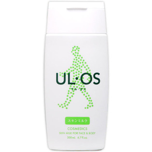

返回列表
产品名称：ウル・オススキンミルク〈レギュラー〉 200ml

大塚製薬 ウル・オススキンミルク〈レギュラー〉 200ml ２００ｍｌ
メーカー 大塚製薬
JANコード 4987035235712
商品の特徴
肌にやさしくソフトな使い心地です。着色料・合成香料・パラベン無配合。肌荒れ・かさつきに。肌のハリ・弾力が気になる時に。ひげそりあとに、お風呂上がりに、洗顔のあとに。
成分・分量
用法及び用量